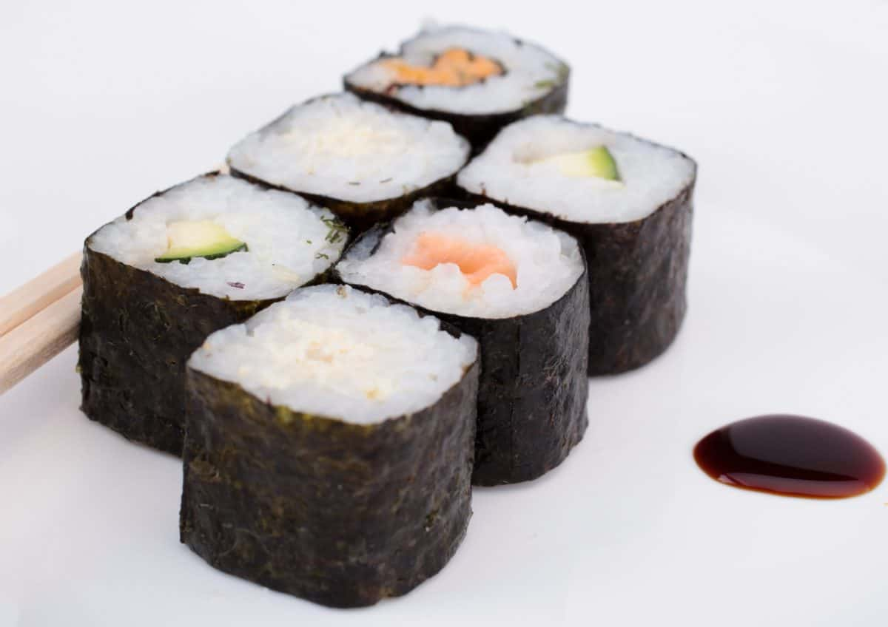

Sushi
Home

Sushi is one of Japan’s most iconic dishes, celebrated worldwide for its
delicate flavors and artistic presentation. It typically consists of
vinegared rice paired with a variety of ingredients such as raw or cooked
fish, seafood, vegetables, and occasionally tropical fruits. Sushi comes
in many forms, including nigiri (hand-pressed rice with a topping), maki
(rolled sushi), and sashimi (slices of raw fish served without rice), each
offering a unique taste experience.
Beyond its taste, sushi is also admired for the precision and skill
required in its preparation. Chefs carefully select the freshest
ingredients and combine them with perfectly seasoned rice to create a
harmonious balance of flavors and textures. Whether enjoyed at a sushi
bar, a fine dining restaurant, or homemade, sushi provides a refreshing
and visually appealing meal that reflects both tradition and culinary
artistry.
Ingredients
- 2 cups sushi rice
- 2 1/2 cups water
- 1/4 cup rice vinegar
- 2 tablespoons sugar
- 1 teaspoon salt
- 5 sheets nori (seaweed)
- 200 g raw fish (such as salmon or tuna), sliced
- 1/2 cucumber, julienned
- 1/2 avocado, sliced
- 2 tablespoons soy sauce
- Wasabi, to taste
- Pickled ginger, for serving
Instructions
- Rinse the sushi rice under cold water until the water runs clear.
-
Cook the rice with water according to the package instructions or in a
rice cooker.
-
Mix rice vinegar, sugar, and salt in a small bowl until dissolved, then
gently fold into the cooked rice. Let the rice cool to room temperature.
- Place a sheet of nori on a bamboo sushi mat, shiny side down.
-
Spread an even layer of sushi rice over the nori, leaving about 1 inch
at the top free of rice.
- Arrange slices of fish, cucumber, and avocado over the rice.
-
Carefully roll the sushi using the bamboo mat, pressing gently to shape
the roll.
- Slice the roll into bite-sized pieces using a sharp, wet knife.
- Serve with soy sauce, wasabi, and pickled ginger.